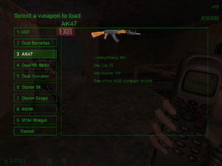

» The Hud
» The Maps
» Game Elements
» Playing
» Cvars

When you enter the game, whether it's as a rebel or agent, the first thing you want to do is purchase a weapon, this all depends on how many loading points. Weapons, armour and abilities all cost you loading points. Once you're suited up it's time to complete your objective, trying to stay alive as you do so.

If you're a rebel, your job is to get to the neurotek facility and plant the bomb at a pre-defined location. One person will have the bomb and this person will be indicated by their name being highlighted in red on the scoreboard, as well as their player model carrying a bag on their back.


As an agent you have to make sure the bomb doesnt get planted and Dr White is captured. You capture Dr White by killing him, where he will respawn in jail. From here on you have 2 objectives, make sure Dr White isnt rescued and make sure no one tries to plant the bomb.


If you manage to rescue Dr White as a rebel/civ, then you must make sure you bomb the target, get the hardline activated and get Dr White to a phone booth so you can escape and win the round.

If, as an agent, you manage to keep Dr White for 3 full minutes then you win the round. If both teams are reduced to swats and civs the last remaining rebel/agent wins the game for their team.